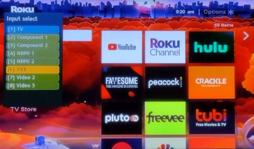

Home
Survey
Hardware
Images
Hardware and Screenshot images

A. Antenna Rotator
B. Antenna Amplifier
C. Typical Smart TV screen
D. TV menu for changing input

E. Roku Screen after switching TV input
F. Roku screen of TV with external Roku device
Below is a more complete description of the above images. All of the above images can be enlarged
by clicking on the image.
-
Antenna Rotator.
The first image above is a RCA antenna rotator. It comes with a control box which
and remote control. The control box has 12 presets for automatic antenna positioning.
You can use the contol box to rotate the antenna 360 degrees. Once you find a sweet
spot for a particular station. You can set 1 of the 12 presets to that position.
This makes repositioning the antenna to optimize reception for a particular station
an ease.
-
Antenna Amplifier.
The antenna amplifier comes with a power source and amplifier. The actual amplifier is
mounted as close to the antenna as possible. The idea is to amplify the signal before it
experiences losses in a long cable. The amplitude of the signal will be attenuated as it
runs through the cable, but the noise level will not. If the signal is well above the noise
level at the source (the antenna), then mounting the amplifier close to the source helps
keep your signal above the noise level as it travels through the cable. The power supply
is used indoors and is connected to an interface that provides power to the amplifier on
one side, while the other side passes the signal to the TV.
-
Typical Smart TV screen.
This picture shows the Home screen for the typical smart TV. The right portion of the
screen displays 3 columns of steaming channels. Which streaming channels are displayed
will vary depending on each individuals selection of channels to view. If you enlarge
this image (just click on the image above, labeled C), you will notice the first row
contains "DVD player" and "Live TV". This is the difference between a Smart TV and
a regular TV with an external device. Everything is selected through the Roku Home
Menu including "Live TV" (antenna OTA broadcasts) and
any external device that is connected. The Roku remote that comes with the TV, controls
everything including scrolling between channels after selecting "Live TV".
-
TV menu for changing input.
Most conventional TVs require you to select external devices from an Input Selection
menu that is displayed after pressing the "input" button on the remote. I call it the
"input" button because that is what it is called on my remote control,
but it may vary, depending on the brand of the TV and/or remote. Again, you can enlarge
the picture labeled 'D' above and get a better idea of what I am talking about. On my
particular TV, the names for the input are rather limited and I chose "PVR" as the name
for the external Roku device which is connected to input nuber 6.
-
Roku Screen after switching TV input.
After selecting "[6] PVR" from the Input Selection menu (previously described), the
Roku menu shown in this picture is displayed. If I want to switch back to antenna TV,
I just need to select "[1] TV". The Input Selection menu will automatically go away
after a few seconds.
-
Roku screen of TV with external Roku device.
This final picture shows the Roku Home menu displayed on a conventional TV after the
Input Selection menu dissapears. Compare this image to the image in 'C' to see the
difference between a Smart TV and a conventional TV. Note on a Smart TV, only one remote
control is needed to control the streaming and the OTA
broadcasts ("live TV").